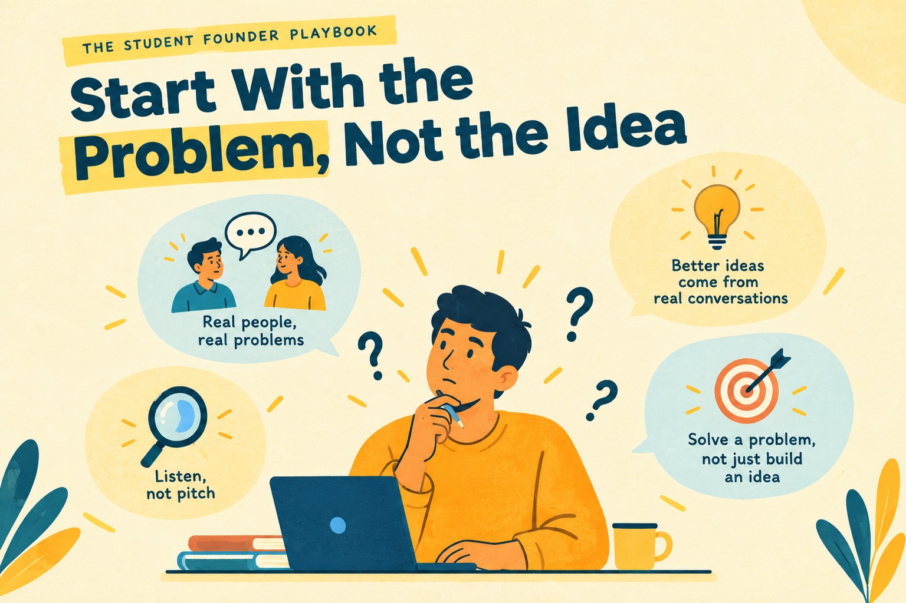

Start With the Problem, Not the Idea

EIC MBM
Published on September 23, 2026

Most startups do not fail because the idea was weak. They fail because the founder solved a problem that nobody felt strongly enough to pay to fix.
Idea and problem are different things
An idea is a proposed solution, such as an app that books laundry pickups. A problem is a situation people already live with, such as hostel students losing hours every week waiting for their clothes to be washed and returned. The difference sounds small, but it shapes everything that follows. A good problem statement names who is affected, how often the situation arises, and what it costs them. The idea is only one possible answer to that problem, and frequently it is not the best one.
The distinction also changes how you behave. Founders who begin with an idea tend to defend it when the evidence turns against them, because the idea has become part of their identity. Founders who begin with a problem stay curious. The problem survives even when their first solution fails, so they can keep searching for a better answer without feeling that they have failed personally.
A one-line test
Write your problem in a single sentence that does not mention your product at all. If the sentence contains an app name, a feature, or the word platform, rewrite it until it describes only the situation. Students need a faster way to get laundry done still points toward a fix. Students have no reliable way to know when their clothes will be ready describes something that exists whether or not you build anything.
Once you have the sentence, read it aloud to yourself and ask whether a stranger would recognise the situation immediately. If they would need an explanation, the problem is probably still too abstract. Keep editing until the sentence feels almost obvious.
Three filters for a real problem
The first filter is frequency. A problem that recurs every week can support a business, while one that arises once a year rarely can. Ask people when the problem last happened, not whether they would like it solved. The answer tells you quickly whether the problem is part of their routine or an occasional annoyance.
The second filter is existing workarounds. A WhatsApp group created to share laundry duties, a notebook where a student tracks who owes what, or a friend who always handles bookings all show that people care enough to act. When someone has built a workaround, they have already decided the problem matters. When nobody is doing anything about it, the problem may not be important enough to sustain a business.
The third filter is willingness to pay. Compliments and likes cost people nothing, so they reveal very little. Ask who would pay, how much they would pay, and what they already spend in money or time to deal with the situation. A problem with a visible cost is far easier to build around than one that is merely irritating.
Why founders resist this step
Most founders skip this stage for emotional reasons rather than practical ones. An idea feels like progress, and a problem can feel like a pause before the real work begins. Asking people about their frustrations also carries a risk: you might discover that the idea you love is not needed. That discomfort is exactly why this step matters. It is far less expensive to discover a weak problem in a conversation than after three months of building.
A worked example
Meera, a first-year student living in a girls' hostel, began with a laundry app that offered scheduling, digital payments, and ratings. Before writing a single line of code, she asked ten hostel mates how they handled laundry. She expected complaints about price or about the distance to the laundry shop. Instead, the most common frustration was not knowing when clothes would be ready. Several students said they had arrived at events with nothing suitable to wear because their laundry was still somewhere in the system.
Her idea changed dramatically as a result. She dropped the app and started with a shared WhatsApp group in which one person tracked pickup and return times for everyone on the floor. That version was small enough to test within a week, and it addressed the exact problem her classmates had described in their own words. The app could come later, if the simple version proved that students would use the service consistently.
What a strong problem statement looks like
A strong problem statement is specific, observable, and costly. Compare final-year students struggle with placements against final-year students who discover on the morning of an interview that they cannot find their certificates. The second version names a moment, a consequence, and a person. It gives you something to investigate, test, and eventually solve. Vague statements, by contrast, invite endless brainstorming without producing any clear next step.
Key takeaway: A strong problem names a person, a recurring situation, and a real cost. Anything less is still an assumption dressed up as a plan.
Reflect: What does this problem cost the person living with it, in time, money, or stress?